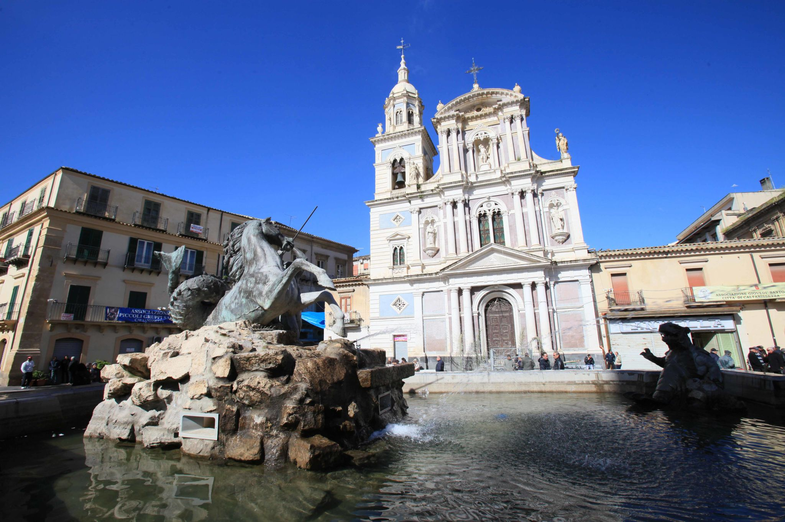

Caltanissetta
Nel cuore della Sicilia interna, Piazza Garibaldi si presenta come un ampio e luminoso "quadrivio" monumentale. È il centro esatto della vita nissena, dove le due arterie principali della città si incontrano per formare un palcoscenico di rara armonia, caratterizzato da un'atmosfera signorile che rimanda ai fasti dell'epoca industriale legata allo zolfo.

Al centro della piazza svetta la Fontana del Tritone, capolavoro dello scultore nisseno Michele Tripisciano. Realizzata in bronzo nel 1956 (basata su un bozzetto originale dell'artista), raffigura un tritone che doma un furioso cavallo marino, mentre due mostri marini osservano la scena. La statua è un inno al vigore e alla determinazione. In una città lontana dal mare, l'elemento acquatico della fontana funge da rinfrescante punto di rottura visivo rispetto alla calda pietra dei palazzi circostanti.
La piazza è definita da un singolare "dialogo" tra due imponenti edifici sacri che ne delimitano i confini: La Cattedrale "Santa Maria la Nova", con la sua facciata maestosa e sobria, ospita all'interno gli splendidi affreschi del pittore fiammingo Guglielmo Borremans. È il fulcro della fede cittadina e della grandiosa Settimana Santa nissena. Dall'altro lato la Chiesa di San Sebastiano, posta proprio di fronte al Duomo, colpisce per la sua facciata eclettica e slanciata, arricchita da colonne e statue che la rendono uno dei soggetti più fotografati della città.
Piazza Garibaldi è il cuore dei riti più sentiti della Sicilia. È qui che, durante il Giovedì Santo, si radunano le "Vare" (grandi gruppi scultorei che rievocano la Passione), trasformando lo spazio architettonico in una foresta di statue, luci e folla, in una delle manifestazioni religiose più suggestive d'Italia.